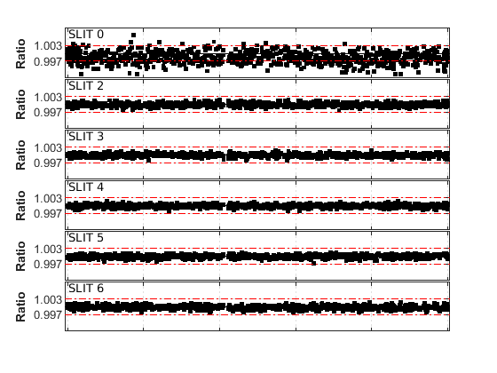
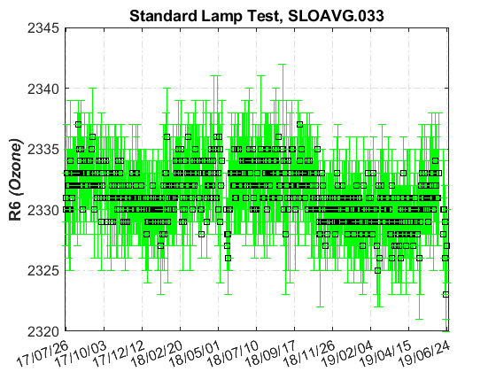
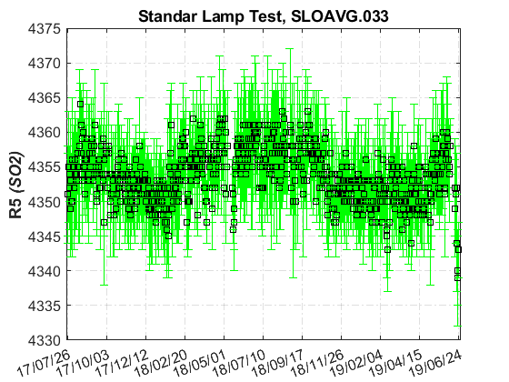
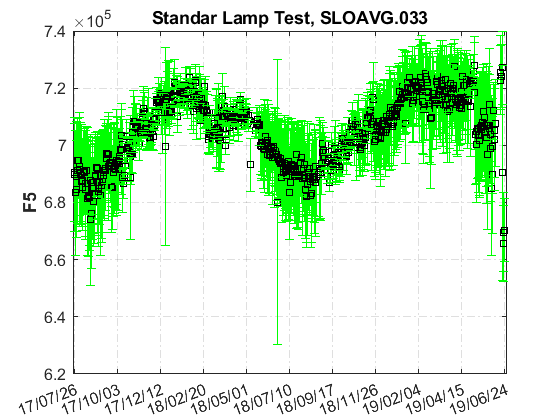
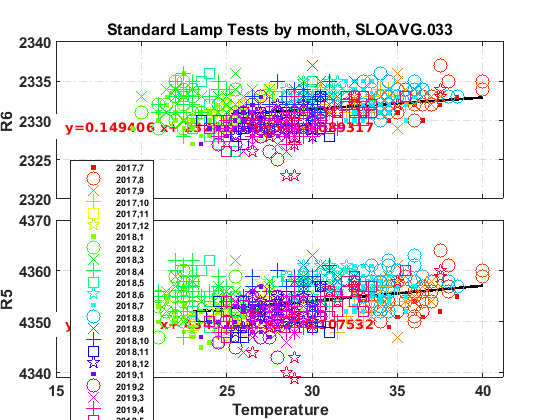
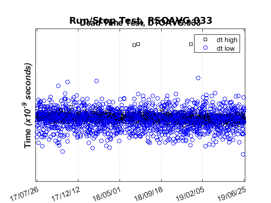
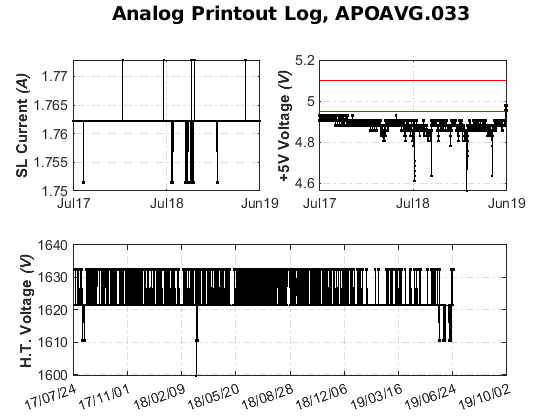
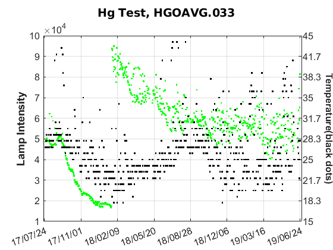
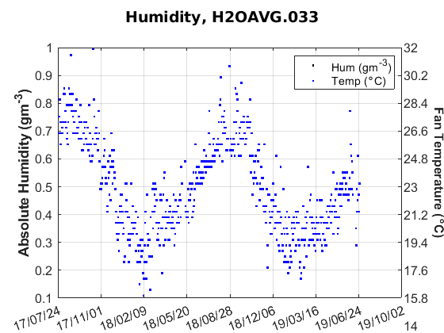
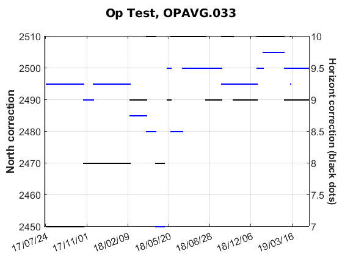

Contents
Brewer Evaluation
clear all;
file_setup='arenos2019_setup';
eval(file_setup);
Cal.n_inst=find(Cal.brw==033);
Cal.file_latex=fullfile('.','latex',Cal.brw_str{Cal.n_inst});
Cal.dir_figs=fullfile('latex',filesep(),Cal.brw_str{Cal.n_inst},...
filesep(),[Cal.brw_str{Cal.n_inst},'_figures'],filesep());
mkdir(Cal.dir_figs);
try
save(Cal.file_save,'-Append','Cal');
catch exception
fprintf('Error: %s\n Initializing data for Brewer %s\n',exception.message,Cal.brw_name{Cal.n_inst});
save(Cal.file_save);
end
ans =
logical
1
ans =
1×1 cell array
{'IZO#185'}
ans =
20×9 cell array
Columns 1 through 5
{'TSK#005'} {[ 5]} {[2]} {[0]} {'005'}
{'IOS#017'} {[ 17]} {[2]} {[0]} {'017'}
{'SCO#033'} {[ 33]} {[2]} {[0]} {'033'}
{'MAD#070'} {[ 70]} {[4]} {[0]} {'070'}
{'UK_#075'} {[ 75]} {[4]} {[0]} {'075'}
{'MUR#117'} {[117]} {[4]} {[0]} {'117'}
{'UK_#126'} {[126]} {[4]} {[0]} {'126'}
{'ARE#150'} {[150]} {[3]} {[0]} {'150'}
{'COR#151'} {[151]} {[4]} {[0]} {'151'}
{'K&Z#158'} {[158]} {[3]} {[0]} {'158'}
{'WRC#163'} {[163]} {[3]} {[0]} {'163'}
{'ZAR#166'} {[166]} {[4]} {[0]} {'166'}
{'UK_#172'} {[172]} {[3]} {[0]} {'172'}
{'JAP#174'} {[174]} {[3]} {[0]} {'174'}
{'IZO#185'} {[185]} {[3]} {[0]} {'185'}
{'MAD#186'} {[186]} {[3]} {[0]} {'186'}
{'CAN#190'} {[190]} {[3]} {[0]} {'190'}
{'TAM#201'} {[201]} {[3]} {[0]} {'201'}
{'DNK#202'} {[202]} {[3]} {[0]} {'202'}
{'DNK#228'} {[228]} {[3]} {[0]} {'228'}
Columns 6 through 9
{'..\005\ICF15117…'} {'..\005\ICF15117…'} {'1838'} {'1838'}
{'..\017\ICF14919…'} {'..\017\ICF14919…'} {'1680'} {'1680'}
{'..\033\ICF15617…'} {'..\033\IOS15617…'} {'2325'} {'2325'}
{'..\070\ICF15617…'} {'..\070\IOS15617…'} {'1685'} {'1685'}
{'..\075\ICF15017…'} {'..\075\ICF15017…'} {'1714'} {'1714'}
{'..\117\ICF15517…'} {'..\117\IOS15517…'} {'1620'} {'1620'}
{'..\126\icf15517…'} {'..\126\ICF17419…'} {'1710'} {'1710'}
{'..\150\ICF15617…'} {'..\150\ICF15617…'} {'0322'} {'0322'}
{'..\151\ICF15317…'} {'..\151\IOS15317…'} {'1880'} {'1880'}
{'..\158\ICF21218…'} {'..\158\ICF21218…'} {'0558'} {'0558'}
{'..\163\ICF23318…'} {'..\163\ICF23318…'} {'0274'} {'0274'}
{'..\166\ICF15217…'} {'..\166\ICF17419…'} {'1955'} {'1955'}
{'..\172\ICF15117…'} {'..\172\ICF15117…'} {'0444'} {'0444'}
{'..\174\ICF20718…'} {'..\174\ICF20718…'} {'0605'} {'0605'}
{'..\185\config18…'} {'..\185\config18…'} {'0365'} {'0367'}
{'..\186\ICF15317…'} {'..\186\IOS15317…'} {'0315'} {'0315'}
{'..\190\ICF11419…'} {'..\190\ICF11419…'} {'0410'} {'0410'}
{'..\201\ICF14315…'} {'..\201\ICF14315…'} {'0320'} {'0320'}
{'..\202\ICF15017…'} {'..\202\ICF15017…'} {'0270'} {'0270'}
{'..\228\ICF15017…'} {'..\228\ICF17319…'} {'0242'} {'0242'}
Brewer setup
Station.OSC=680;
Station.name='';
Station.lat=67;
Station.long=50;
Station.meanozo=350;
Date.CALC_DAYS=Cal.calibration_days{Cal.n_inst,1};
if ~isempty(Cal.calibration_days{Cal.n_inst,2})
Date.BLIND_DAYS=Cal.calibration_days{Cal.n_inst,2};
else
Date.BLIND_DAYS=[NaN,NaN];
end
Date.FINAL_DAYS=Cal.calibration_days{Cal.n_inst,3};
latexcmd(fullfile(Cal.file_latex,['cal_setup_',Cal.brw_str{Cal.n_inst}]),...
'\CALINI',Date.CALC_DAYS(1),'\CALEND',Date.CALC_DAYS(end),...
'\calyear',Date.cal_year,'\calyearold',Date.cal_year-2,...
'\slrefOLD',Cal.SL_OLD_REF(Cal.n_inst),'\slrefNEW',Cal.SL_NEW_REF(Cal.n_inst),...
'\BLINDINI',Date.BLIND_DAYS(1),'\BLINDEND',Date.BLIND_DAYS(end),...
'\FINALINI',Date.FINAL_DAYS(1),'\FINALEND',Date.FINAL_DAYS(end),...
'\caldays',length(Date.FINAL_DAYS),'\Tsync',Cal.Tsync,...
'\brwname',Cal.brw_name(Cal.n_inst),'\brwref',Cal.brw_name(Cal.n_ref),...
'\BRWSTATION',Station.name,'\STATIONOSC',Station.OSC,...
'\campaign',Cal.campaign);
Cal.Date=Date;
save(Cal.file_save,'-Append','Cal');
configuration files
try
[config_ref,TCref,DTref,ETCref,A1ref,ATref,leg]=read_icf(Cal.brw_config_files{Cal.n_ref,2});
[config_def,TCdef,DTdef,ETCdef,A1def,ATdef,leg]=read_icf(Cal.brw_config_files{Cal.n_inst,2});
[config_orig,TCorig,DTorig,ETCorig,A1orig,ATorig,leg]=read_icf(Cal.brw_config_files{Cal.n_inst,1});
latexcmd(fullfile(Cal.file_latex,['cal_config_',Cal.brw_str{Cal.n_inst}]),...
DTref,'\ETCref',ETCref(1),'\Aref',A1ref(1),...
DTdef,'\ETCdef',ETCdef(1),'\Adef',A1def(1),...
DTorig,'\ETCorig',ETCorig(1),'\Aorig',A1orig(1));
makeHtml_Table([config_orig,config_def],[],cellstr(leg),[Cal.brw_config_files(Cal.n_inst,1),Cal.brw_config_files(Cal.n_inst,2)])
catch exception
fprintf('%s, brewer: %s\n',exception.message,Cal.brw_name{Cal.n_inst});
DTorig=NaN; DTdef=NaN;
end
Index exceeds array bounds., brewer: SCO#033
Historical review AVG info
load(Cal.file_save,'avg_report');
close all;
[sl_data,dt_data,rs_data,ap_data,hg_data,h2o_data,op_data,Args]=brw_avg_report(Cal.brw_str{Cal.n_inst},Cal.brw_config_files(Cal.n_inst,:),...
'date_range',[datenum(Cal.Date.cal_year-2,7,25),datenum(Cal.Date.cal_year,Cal.Date.cal_month+1,5)],...
'SL_REF',[Cal.SL_OLD_REF(Cal.n_inst),Cal.SL_NEW_REF(Cal.n_inst)],...
'DT_REF',[DTorig,DTdef],...
'outlier_flag',{'','','','','','',''});
try
if ~isempty(sl_data)
day_ini=find(sl_data(:,2)==Cal.Date.cal_year & sl_data(:,3)>=Cal.Date.FINAL_DAYS(1));
day_last=find(sl_data(:,2)==Cal.Date.cal_year & sl_data(:,3)<=Cal.Date.FINAL_DAYS(end));
if isempty(day_ini)
disp(datestr(sl_data(end,1)))
RseisAVG=round(nanmean(sl_data(:,12)))
RcincoAVG=round(nanmean(sl_data(:,11)))
else
RseisAVG=round(nanmean(sl_data(day_ini(1):day_last(end),12)))
RcincoAVG=round(nanmean(sl_data(day_ini(1):day_last(end),11)))
end
end
if ~isempty(dt_data)
day_ini=find(dt_data(:,2)==Cal.Date.cal_year & dt_data(:,3)>=Cal.Date.FINAL_DAYS(1));
day_last=find(dt_data(:,2)==Cal.Date.cal_year & dt_data(:,3)<=Cal.Date.FINAL_DAYS(end));
if isempty(day_ini)
DTAVG=sprintf('%g',10^-9*(round(nanmean(dt_data(:,4)))))
else
DTAVG=sprintf('%g',10^-9*round(nanmean(dt_data(day_ini(1):day_last(end),4))));
end
end
latexcmd(fullfile(Cal.file_latex,['cal_status_',Cal.brw_str{Cal.n_inst}]),RseisAVG,RcincoAVG,DTAVG);
format short g;
tableform({'SLR6 orig', 'Calc. AVG','SLR5 orig','Calculated','DT orig','Calculated'},...
[Cal.SL_OLD_REF(Cal.n_inst), RseisAVG, NaN, RcincoAVG, DTorig, str2double(DTAVG)]);
avg_report{Cal.n_inst}.RseisAVG=RseisAVG; avg_report{Cal.n_inst}.RcincoAVG=RcincoAVG;
avg_report{Cal.n_inst}.DTorig =DTorig; avg_report{Cal.n_inst}.DTAVG =DTAVG;
catch exception
fprintf('Error: %s, brewer %s\n',exception.message,Cal.brw_name{Cal.n_inst});
end
avg_report{Cal.n_inst}.sl_data=sl_data; avg_report{Cal.n_inst}.dt_data=dt_data;
avg_report{Cal.n_inst}.rs_data=rs_data; avg_report{Cal.n_inst}.ap_data=ap_data;
avg_report{Cal.n_inst}.hg_data=hg_data; avg_report{Cal.n_inst}.op_data=op_data;
if exist('Args','var')
avg_report{Cal.n_inst}.Args=Args;
else disp('No se est�n guardando los inputs de la funci�n!!')
end
save(Cal.file_save,'-APPEND','avg_report');
--------- Validation OK --------------
List of arguments given default values:
'path_to_file' defaults to .
--------------------------------------
RseisAVG =
2324
RcincoAVG =
4341
Columns 1 through 5
'SLR6 orig' 'Calc. AVG' 'SLR5 orig' 'Calculated' 'DT orig'
[ 2325] [ 2324] [ NaN] [ 4341] [ NaN]
Column 6
'Calculated'
[ 4e-08]
         
ix=sort(double(findobj('Type','figure')));
printfiles_report(ix',Cal.dir_figs);
ix=sort([double(findobj('tag','SLAVG_F5')) double(findobj('tag','HGOAVG'))])';
printfiles_report(ix',Cal.dir_figs,'LockAxes',0,'no_export');
figure(double(findobj('tag','RSAVG')));
printfiles_report(gcf,Cal.dir_figs,'Width',12.5,'Height',17);
close all;
CZ REPORT
br=sprintf('%03d',Cal.brw(Cal.n_inst));
try
analyzeCZ(fullfile(Cal.path_root,['bdata',br],['CZ*.',br]),...
'date_range',datenum(Cal.Date.cal_year,Cal.Date.cal_month-1,1));
catch exception
fprintf('Error: %s, brewer %s\n',exception.stack.name,Cal.brw_name{Cal.n_inst});
end
Error in plot: Value must be a 1x2 vector of numeric type in which the second element is larger than the first and may be Inf
--------- Validation OK --------------
List of arguments given default values:
'plot_flag' defaults to 1
--------------------------------------
try
figure(max(double(findobj('tag','CZ_Report'))));
printfiles_report(gcf,fullfile(Cal.path_root,Cal.dir_figs));
catch exception
fprintf('Error: %s, brewer %s\n',exception.message,Cal.brw_name{Cal.n_inst});
end
close all
HL Report
br=sprintf('%03d',Cal.brw(Cal.n_inst));
try
analyzeCZ(fullfile(Cal.path_root,['bdata',br],['HL*.',br]),...
'date_range',datenum(Cal.Date.cal_year,1,[Cal.Date.day0-30 Cal.Date.dayend]));
catch exception
fprintf('Error: %s, brewer %s\n',exception.stack.name,Cal.brw_name{Cal.n_inst});
end
No CZ Files
try
figure(max(double(findobj('tag','CZ_Report'))));
printfiles_report(gcf,Cal.dir_figs,'aux_pattern',{'HL'});
catch exception
fprintf('Error: %s, brewer %s\n',exception.message,Cal.brw_name{Cal.n_inst});
end
close all
Error: Single input must be an existing figure handle or a scalar integer from 1 to 2147483646, brewer SCO#033
HS Report
br=sprintf('%03d',Cal.brw(Cal.n_inst));
try
analyzeCZ(fullfile(Cal.path_root,['bdata',br],['HS*.',br]),...
'date_range',datenum(Cal.Date.cal_year,1,[Cal.Date.day0-30 Cal.Date.dayend]));
catch exception
fprintf('Error: %s, brewer %s\n',exception.stack.name,Cal.brw_name{Cal.n_inst});
end
--------- Validation OK --------------
List of arguments given default values:
'plot_flag' defaults to 1
--------------------------------------
try
figure(max(double(findobj('tag','CZ_Report'))));
printfiles_report(gcf,Cal.dir_figs,'aux_pattern',{'HS'});
catch exception
fprintf('Error: %s, brewer %s\n',exception.message,Cal.brw_name{Cal.n_inst});
end
close all
CI REPORT
close all; br=sprintf('%03d',Cal.brw(Cal.n_inst));
try
[LRatPFHT Error]=analyzeCI(fullfile(Cal.path_root,['bdata',br],['CI*.',br]),...
'CI16819.033',...
'depuracion',1,'outlier_flag',0,...
'date_range',datenum(Cal.Date.cal_year,1,[168 180]));
catch exception
fprintf('Error: %s, brewer %s\n',exception.stack.name,Cal.brw_name{Cal.n_inst});
end
--------- Validation OK --------------
List of arguments given default values:
None
--------------------------------------
try
figure(double(findobj('tag','CI_Report')));
printfiles_report(gcf,fullfile(Cal.path_root,Cal.dir_figs),'LockAxes',0,'no_export');
catch exception
fprintf('Error: %s, brewer %s\n',exception.message,Cal.brw_name{Cal.n_inst});
end
close all
FV REPORT
br=sprintf('%03d',Cal.brw(Cal.n_inst));
try
[azimut zenit]=analyze_FV(fullfile(Cal.path_root,['bdata',br],['FV*.',br]),...
'date_range',datenum(Cal.Date.cal_year,1,Cal.calibration_days{Cal.n_inst,1}([1 end])),...
'plot_flag',0);
catch exception
fprintf('Error: %s, brewer %s\n',exception.stack.name,Cal.brw_name{Cal.n_inst});
end
try
figure(double(findobj('tag','FV_Report')));
printfiles_report(gcf,fullfile(Cal.path_root,Cal.dir_figs),'LockAxes',0,'no_export');
catch exception
fprintf('Error: %s, brewer %s\n',exception.message,Cal.brw_name{Cal.n_inst});
end
close all